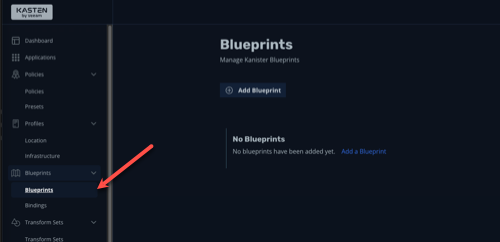
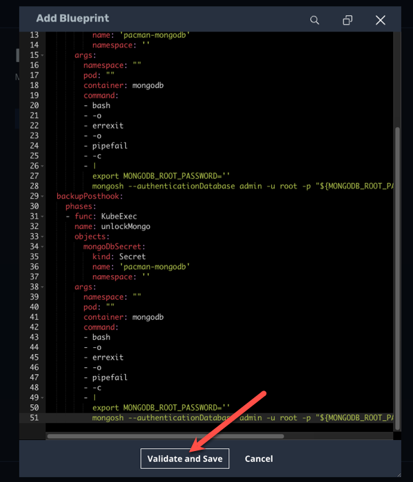
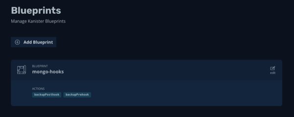
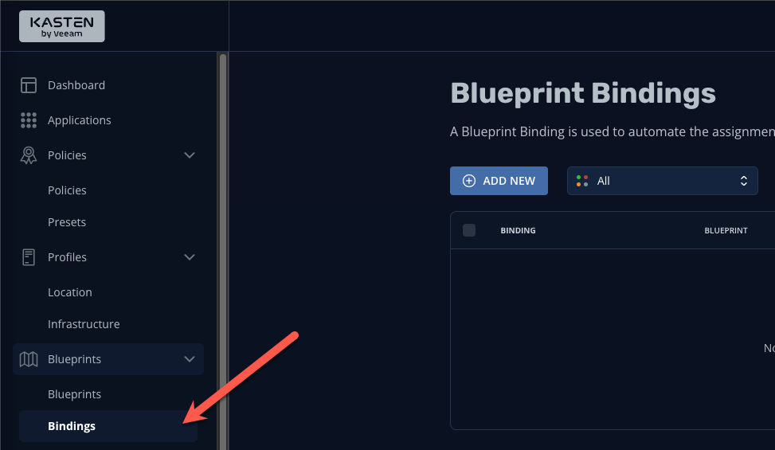
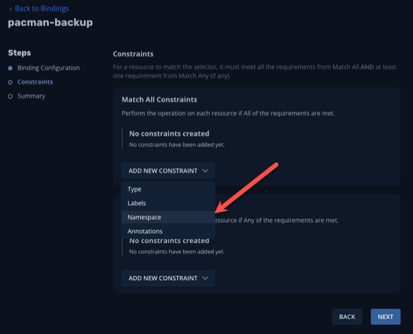
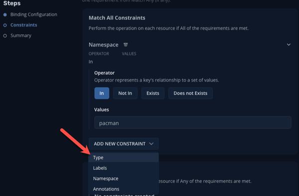
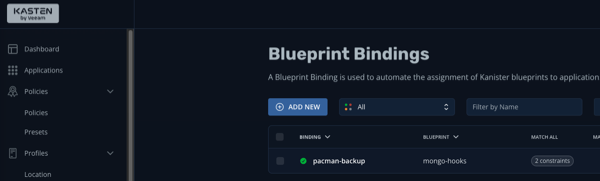
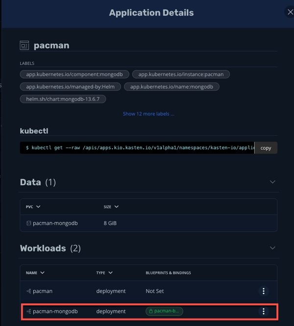
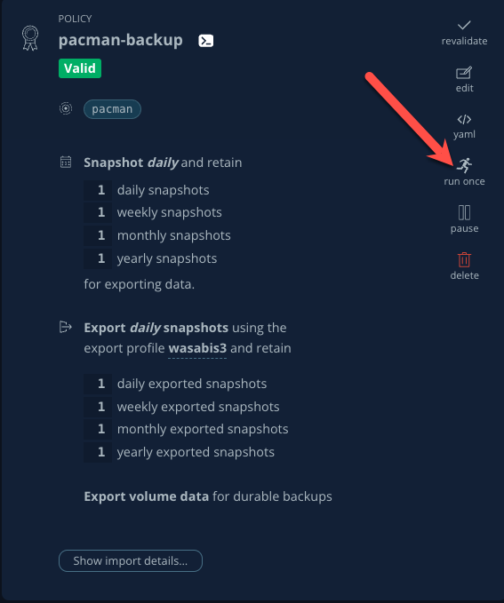
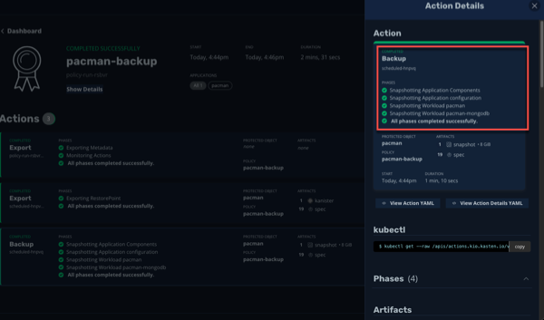

Lab 4 - Application Consistency
üìñ Part 1. Understanding Backups
In the previous labs, you saw how easily a user can setup Kasten and perform a basic backup and restore operation. In order to support the broad Kubernetes ecosystem of distributions and storage solutions, as well as the variety of stateful apps running on top, Kasten provides a number of methods for capturing data and ensuring its consistency.
The previous backup and restores were accomplished using the underlying storage’s volumesnapshot capability to perform our backup operation for the disks attached to our application, known as Persistent Volume Claims (PVCs). Kasten can create storage snapshots via any CSI driver that supports VolumeSnapshots API or direct storage integrations with AWS EBS & EFS, Azure Managed Disks, GCP Persistent Disk, Ceph RBD, Cinder, vSphere Cloud Native Storage, and Portworx.
All of the objects in the namespace are also captured (e.g. deployment, secrets, configmaps, etc)
Because these backups are performed via storage-based snapshots, they are known as Crash Consistent Backups
While this is great for our demo purposes and some applications, there are many workloads that require disk operations to be in a quiesced state during backup, otherwise there is a risk of data corruption which can cause issues upon restore.
One such workload is MongoDB, which is the database backing our high scores in Pacman. And while MongoDB supports volume-level backup via snapshots, the database must be locked during the snapshot process in order to produce a dependable backup, or an Application Consistent Backup
Alternatively, rather than a storage-centric PVC backup, we could use app-specific native tools (e.g. mongodump and mongorestore) to directly export and restore data into our MongoDB at the same time we take a backup of our Kubernetes objects (deployments, secrets, configmaps, etc), which would be a Logical Backup
Fortunately Kasten has the capability to leverage a construct called Kanister Blueprints, which provides a standardized way to perform more advanced operations for application consistent and logical backups.
üìñ Part 2. Creating a Blueprint and binding
The good news is our Pacman application leverages an underlying Bitnami instance of MongoDB, so we can simply modify that example blueprint for our purposes.
Create a New Blueprint
-
Within the Kasten UI, navigate to Blueprints > Blueprints in the side menu
Figure 3. Blueprints UI -
Click + Add Blueprint
-
Paste the following into the YAML prompt:
apiVersion: cr.kanister.io/v1alpha1
kind: Blueprint
metadata:
name: mongo-hooks
actions:
backupPrehook:
phases:
- func: KubeExec
name: lockMongo
objects:
mongoDbSecret:
kind: Secret
name: 'pacman-mongodb'
namespace: '{{ .Deployment.Namespace }}'
args:
namespace: "{{ .Deployment.Namespace }}"
pod: "{{ index .Deployment.Pods 0 }}"
container: mongodb
command:
- bash
- -o
- errexit
- -o
- pipefail
- -c
- |
export MONGODB_ROOT_PASSWORD='{{ index .Phases.lockMongo.Secrets.mongoDbSecret.Data "mongodb-root-password" | toString }}'
mongosh --authenticationDatabase admin -u root -p "$MONGODB_ROOT_PASSWORD" --eval="db.fsyncLock()"
backupPosthook:
phases:
- func: KubeExec
name: unlockMongo
objects:
mongoDbSecret:
kind: Secret
name: 'pacman-mongodb'
namespace: '{{ .Deployment.Namespace }}'
args:
namespace: "{{ .Deployment.Namespace }}"
pod: "{{ index .Deployment.Pods 0 }}"
container: mongodb
command:
- bash
- -o
- errexit
- -o
- pipefail
- -c
- |
export MONGODB_ROOT_PASSWORD='{{ index .Phases.unlockMongo.Secrets.mongoDbSecret.Data "mongodb-root-password" | toString }}'
mongosh --authenticationDatabase admin -u root -p "$MONGODB_ROOT_PASSWORD" --eval="db.fsyncUnlock()"-
Click Validate and Save
Figure 4. Validate and Save -
A new Blueprint named
mongo-hooksshould appear within the Blueprints listFigure 5. Blueprints List
üìñ Part 3. Binding our Blueprint
Now that we have created our Blueprint we need to bind it to our application so that it is automatically run during backup, export, and restore operations.
-
Using the side menu, navigate to Blueprints > Bindings
Figure 6. Blueprint Bindings UI -
Click + Add New
-
Specify the following:
Binding Name | pacman-backup | Blueprint Name | mongo-hooks | Enable Blueprint Binding | [checked] |
-
Click Next
-
We‚Äôll now specify a constraint to ensure that our blueprint is bound to our application. We‚Äôll use a simple “Match All Constraints” constraint to apply our blueprint to our pacman application via namespace. Click Add New Constraint and select Namespace in the drop-down list:
Figure 7. Blueprint Constraints -
Leave the default Operator of In and specify the namespace Pacman
-
Still in the Match All Constraints pane, click Add New Constraint and select Type
Figure 8. Add New Constraint -
Leave the default Operator of In and specify Type
-
For the Type Constraint, specify the following:
| Group | [leave blank] | | Version | [leave blank] | | Resource | deployments | | Name | pacman-mongodb |
-
Click Next
-
Click Submit
Figure 9. Blueprint Bindings List{: .note } > Rather than use bindings via the UI, we could simply annotate the deployment to point it to the
mongo-hook> blueprint we created earlier >kubectl annotate deployment pacman-mongodb kanister.kasten.io/blueprint='mongo-hooks' -n pacman -
Using the navigation menu to the left, click Applications then click on Pacman in the list. A modul will appear outlining the application components, and you should see the blueprint we just created automatically bound to the pacman-mongodb deployment:
Figure 10. Pacman-MongoDB BindingNow when we run our previously configured backup job pacman-backup, our blueprint will automatically run to pause database operations on our Pacman score database.
-
Close the Application Details modul by clicking the X in the upper right corner and navigate to Policies using the left-hand pane.
-
Click Run Once on the pacman-backup policy
Figure 11. Run Pacman-Backup -
Click Yes, Continue when prompted.
-
Click on Dashboard in the left navigate pane to monitor the backup policy run action and under the Actions section, click on the running Policy Run action.
-
All phases should complete successfully and we have taken an Application Consistent backup of our Pacman Application. Rejoice!
Figure 12. Pacman Backup Completed
Part 4. Takeaways
-
Kasten supports multiple backup types, including crash consistent, application consistent, and logical
-
Application consistent and logical backups are performed via Kanister Blueprints
-
The Kanister Project is an open source project with community-authored blueprints
-
Blueprints are bound to workloads via Blueprint Bindings which can be applied via a number of ways within the UI or YAML directly
üèÅ Part 5. Conclusion
Congratulations, you finished the Kasten Demo on Red Hat OpenShift! While we only covered a simple crash consistent and application consistent backup and restore in this demo, Kasten can do much more, such as:
-
Backup and protect off-cluster workloads (e.g. RDS, Azure CosmosDB, etc)
-
Backup and protect OpenShift Virtualization VM workloads
-
Prevent data loss and help you quickly recover in the event of a disaster (e.g. a Ransomware attack)
-
Migrate application and VM workloads from non-OpenShift K8s clusters to OpenShift
-
Migrate workloads from on-premises to the cloud, or vice versa
-
Integrate with CI/CD pipelines to automatically backup and protect workloads as they are deployed
To learn more visit kasten.io